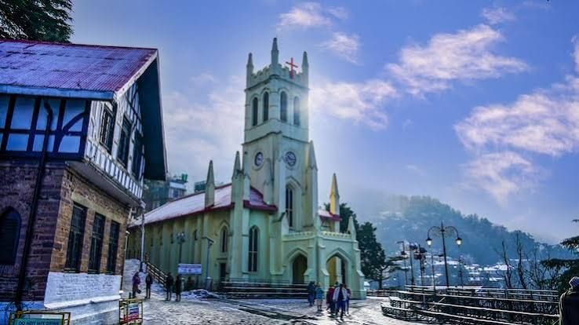
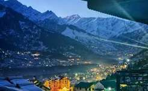
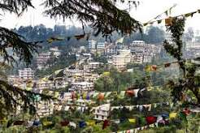
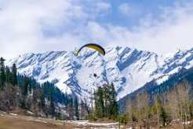
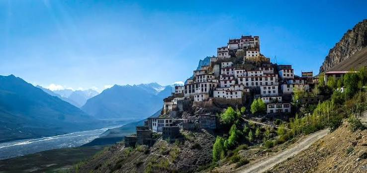
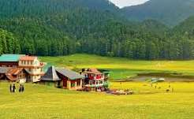
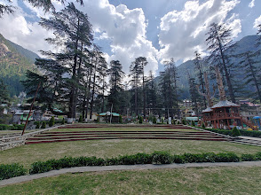
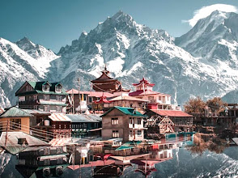
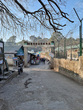

Shimla is the capital of Himachal Pradesh. It is famous for its mountains and pleasant weather.

Manali is a famous hill station. It is surrounded by beautiful mountains and rivers.

Dharamshala is famous for mountains and Tibetan culture.

Kullu is famous for its beautiful valley and natural scenery.

Spiti Valley is famous for its mountains and beautiful landscapes.

Dalhousie is a peaceful hill station surrounded by mountains.

Kasol is a beautiful village in the Parvati Valley, famous for its scenic
mountains, rivers, trekking trails, and peaceful atmosphere.

Kinnaur is known for its stunning Himalayan landscapes, apple orchards,
valleys, and traditional villages.

Kasauli is a peaceful hill station famous for its pleasant weather, pine forests,
scenic views, and colonial-era buildings.